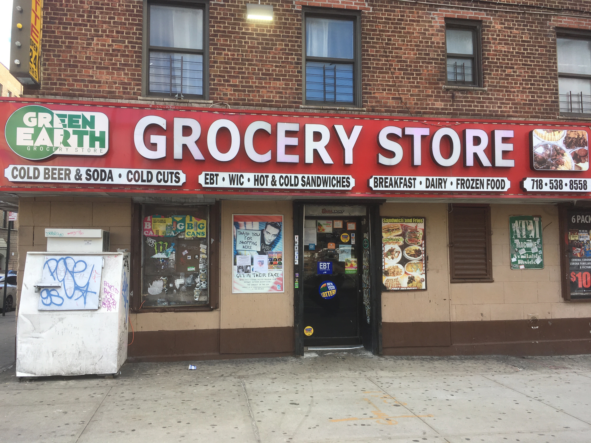
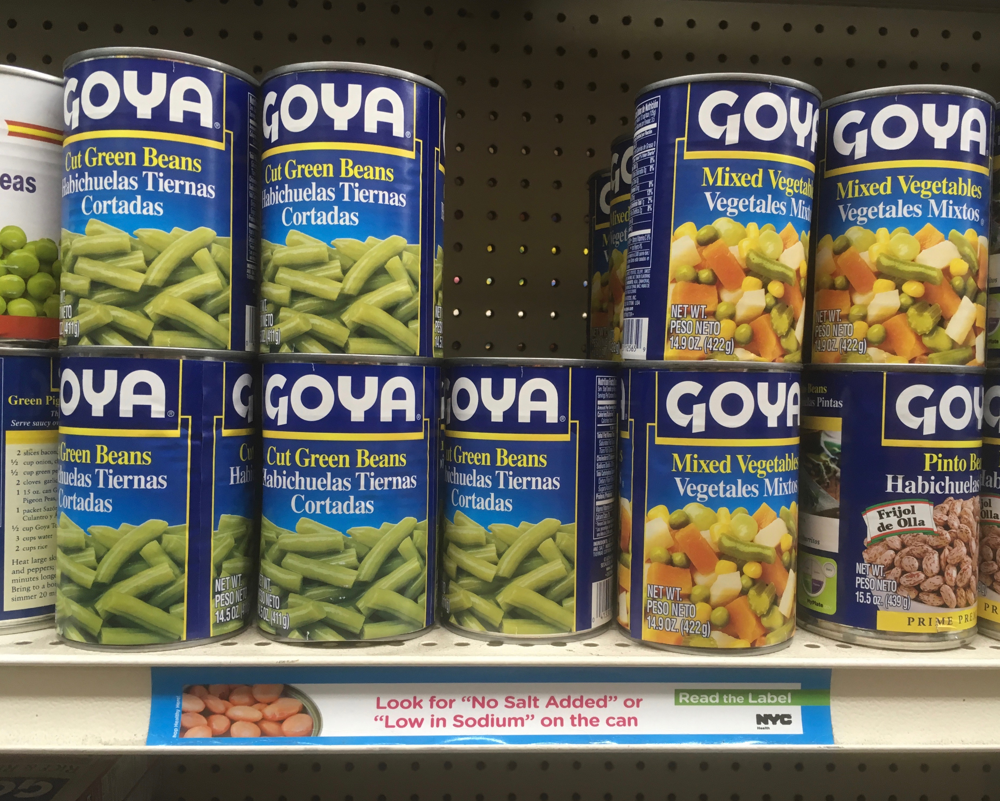

As bodega owners add fresh fruit and water, customers stick to chips and soda.
By Dan Whateley
Dec. 09, 2018
Bodega owners in the South Bronx struggle to keep up as city officials, non-profits and business associations push for more healthy food in their stores. Some of the challenges they face include finding physical shelf space and adequate refrigeration – not to mention a lack of customer demand for fruits and vegetables.
“People don’t really go for the healthy options,” said Ashley Aristy. “When they have an option, they’re gonna go for the unhealthy choice.”
Aristy, 22, grew up in the Bronx and works at her father’s South Bronx bodega, La Solucion Deli Grocery. She said chips, 50-cent sodas and $1 ham and cheese sandwiches are some of the more popular items at the store. “Of course, we’re in a Spanish neighborhood so this sells a lot,” she said, pointing to a row of sweet plantains.
Bodegas are ubiquitous in the Bronx. In some neighborhoods, they outnumber supermarkets by a ratio of 10-to-1. After years of city-backed initiatives to stock healthy foods in bodegas, health organizations like Bronx Health REACH and the Montefiore Health System have turned their attention to customers who, in many cases, aren’t buying healthy options.
“The big piece of this, which is super challenging, of course, is driving demand for healthy products to the stores,” said Liz Spurrell-Huss, senior project manager at Montefiore Health System.
“I think there's a perception that bodegas are not places where you can get healthy food,” she said. “We’re always challenging that perception.”
“It's one thing to train the store owners on how to stock healthy foods, but it's another thing to also make sure that there is also that community demand,” said Kelly Moltzen, program manager at Bronx Health REACH.
Over the last two years, her organization has led trainings for dozens of bodega owners on how to sell healthy food. “If they're gonna make some cut-up fruits and vegetables, it takes efforts to cut those things up,” Moltzen said. “They're not gonna do that if people aren't gonna buy it. And they're gonna lose money on it.”
If you see one of our Don't Stress, Eat Fresh signs the next time you are on a @NYCTBus bus in the Bronx, take a photo and post it on your social media with the tag #freshbronxbodegas. pic.twitter.com/98wjLqhaBw
— Bronx Health REACH (@BxHealthREACH) December 2, 2018
Phrases such as “don’t stress, eat fresh,” “fruits and veggies in the house” and “fresh and tasty” now appear in all-caps on MTA buses, subway stations and shiny new posters in bodegas throughout the borough. The marketing campaign, launched this month on LinkNYC kiosks, is an initiative of the Bronx Bodega Partners Workgroup, a coalition of Bronx organizations that hope to convince shoppers to buy fresh fruits and water instead of chips and soda.
For some bodega owners, the challenge is less about increasing demand for healthy food and more about finding shelf space and adequate refrigeration to store and sell fruits and vegetables.
Roberto Delrosario, who manages the Green Earth Grocery bodega on the Grand Concourse, said he doesn’t have enough shelves to expand his fresh food offering.
"We have to bring more healthy foods. When you put in healthy food, you help the community,” he said, standing behind the cash register in his bodega at the corner of 171st Street on the Grand Concourse. Delrosario said the store has a freezer unit to store lettuce and salad ingredients, but his front display is all non-refrigerated items like plantains and bananas.
For Anthony Valerio, owner of Gerard Food Market near Yankee Stadium, refrigeration was the main barrier to selling fresh food in his store. After a nonprofit donated a refrigerator two-and-a-half years ago, he’s been able to sell baby carrots, cucumbers, tomatoes, cilantro and other healthy staples, which he restocks every two weeks.
Lenis Aristy, owner of La Solucion Deli Grocery on McClellan Street, received free shelves and a basket from nonprofit health organizations to more prominently display fresh fruit in his store. Aristy also posted labels from the New York City Department of Health and Mental Hygiene beneath his store’s canned goods, advising customers to “look for ‘no salt added’ or ‘low in sodium’ on the can.”
Adding healthy food to bodegas is one piece of a larger effort to improve nutrition in the borough. Bronx County has ranked last in New York for health outcomes every year since 2011 in a national ranking conducted annually by the Robert Wood Johnson Foundation and the University of Wisconsin Population Health Institute.
Bronx state Sen. Gustavo Rivera is sponsoring legislation to set new nutrition standards in restaurants. He’s also proposed adding warning labels to sugary beverages.
"The Bronx is the unhealthiest county in the entire state of New York,” Rivera said. “There's a public health impact to just having a high sodium, high fat, high sugar diet.”